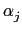

suivant: Les expressions algébriques
monter: Les complexes
précédent: Multiplier par le complexe
Table des matières
Index
Le barycentre de nombres complexes : barycenter barycentre
Voir aussi : 9.9.9 et 10.3.7.
barycentre a comme argument deux listes de même longueur
(resp une matrice ayant deux colonnes) la première liste (resp colonne)
contient des points Aj ou des nombres complexes aj représentant
l'affixe de ces points, la deuxième liste
(resp colonne) contient des coefficients réels .
barycentre renvoie le point qui est le barycentre des points Aj
d'affixes aj affectés des coefficients réels lorsque

 0. Si
= 0, barycentre renvoie une
erreur.
0. Si
= 0, barycentre renvoie une
erreur.
Attention pour avoir un nombre complexe il faut demander l'affixe du
barycentre, sinon vous avez le tracé du point barycentre dans l'écran
géométrique.
On tape :
affixe(barycentre([1+i,1-i],[1,1]))
Ou on tape :
affixe(barycentre([[1+i,1],[1-i,1]]))
On obtient :
i
Documentation de giac écrite par Renée De Graeve